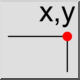
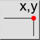

Menü: Info > Position
Tastenkürzel: I, O
Kommandos: infopos | io
Werkzeugleiste / Symbol:
 

Menü: Info > Position
Tastenkürzel: I, O
Kommandos: infopos | io
Beschreibung:
Dieses Werkzeug gibt die absoluten, kartesischen Koordinaten von Punkten in der Zeichnung aus.